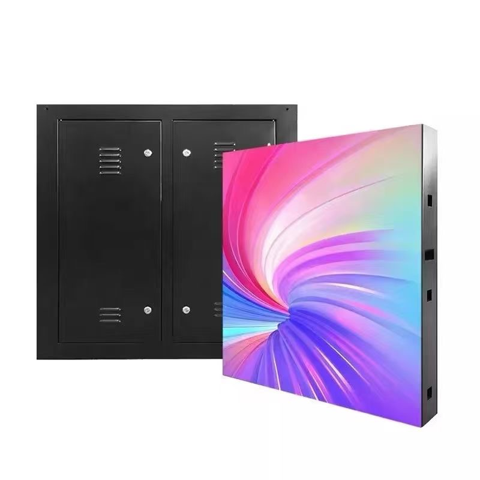

A retail shelf LED display puts a small screen at the exact point where a shopper decides what to buy. Instead of a printed label that is fixed until someone replaces it, a shelf screen can change its price, its promotion, and its message in seconds, across every store at once. In a grocery aisle or an electronics wall, that proximity to the buying decision is the whole value of the format.
Shelf displays are small, but they are not simple. A single strip may be only a few centimeters tall and less than a meter long, yet it must be readable from a standing distance, legible in bright store lighting, and reliable for years of continuous operation. The engineering challenge is doing a lot with very little space and power.
The format has grown because retailers need pricing agility. Frequent promotions, regional price differences, and time-of-day offers are all hard to run with paper. A shelf screen makes dynamic pricing practical, and it also removes the labor cost of printing and swapping labels by hand.
This guide covers the three main shelf display formats, how they are specified, how content and pricing are managed across a store, and what to consider when installing screens into existing shelving.
The theme throughout is integration. Shelf screens succeed when they fit the shelving, the planogram, and the pricing system, and fail when they are treated as standalone gadgets bolted onto a shelf.
Shelf-edge strips are long, narrow screens that mount to the front edge of a shelf, replacing the paper label rail. They are typically only a couple of rows of pixels tall and are designed to show price, unit cost, and a short promotional tag. Their strength is that they sit exactly where the shopper looks for the price, so they feel natural rather than intrusive. Their constraint is height: with so few pixel rows, content must be extremely simple.
End-cap and shelf-front cabinets are larger screens mounted at the end of an aisle or on the face of a shelf unit. They show product video, brand content, and short promotions to shoppers approaching down the aisle. They are effectively small video displays and need enough pitch and brightness to look good at two to four meters.
Shelf-mounted mini cabinets sit inside the shelving, often on a shelf below or beside the product, and show a product loop or a comparison. They are used most in electronics, cosmetics, and premium categories where a short demo influences the choice.
The formats are often combined. A store might use shelf-edge strips for price across the whole aisle, end-cap cabinets at the entrance to the category, and mini cabinets on hero products. Each does a different job, and a good plan uses them together rather than picking one.
Physical fit is the first filter. Shelf pitch, rail profile, and available depth vary between shelving systems, so the strip or cabinet must be specified against the actual fixture, not a generic drawing. Adapters and brackets exist for common systems, but non-standard shelving may need a custom mount.
| Format | Viewing Distance | Typical Content | Brightness Need |
|---|---|---|---|
| Shelf-edge strip | 0.5 - 1.5 m | Price, unit cost, promo tag | Moderate, high contrast |
| End-cap cabinet | 2 - 4 m | Brand video, category promo | High for bright aisles |
| Shelf mini cabinet | 1 - 2 m | Product loop, comparison | Moderate to high |
| Aisle header screen | 4 - 8 m | Wayfinding, store promo | High, wide viewing |
Shelf display content is dominated by one requirement: the price must always be right. A wrong or stale price on a shelf screen is not just a marketing failure, it can be a consumer protection issue in many markets. This means the content system must be connected to the pricing or ERP system, not managed by hand, so that a price change flows to every screen automatically.
Beyond price, the screens should carry a small amount of well-chosen promotion. A unit-cost line, a loyalty tag, or a short offer message is enough. The temptation to fill the space with moving graphics should be resisted, because the shopper is reading a price, not watching a show. Clarity and legibility beat animation every time at shelf-edge scale.
Typography is critical on small screens. Text must be large and high contrast, with a font that stays readable at a distance. Color should be used to signal promotion or status, such as a red tag for a limited offer, but color alone should never be the only signal, because not everyone sees color the same way.
Scheduling lets a store change behavior by time of day. A bakery aisle might highlight morning offers, a drinks aisle might shift its message in the evening, and a whole store can switch to a weekend promotion automatically. Dayparting extracts more value from the same hardware.
Consistency across a store matters for trust. If one aisle shows prices in a different format or a different font, shoppers notice and the store looks careless. A central content system with locked templates keeps every screen on brand and every price presented the same way.
| Content Element | Purpose | Best Format | Refresh Rate |
|---|---|---|---|
| Price and unit cost | Core and legal accuracy | Shelf-edge strip | On price change |
| Promotion tag | Drive trial and urgency | Shelf-edge strip | Per campaign |
| Product video loop | Explain and demonstrate | End-cap cabinet | Per campaign |
| Comparison panel | Support a considered choice | Shelf mini cabinet | Per range change |
| Loyalty message | Reward and retain | End-cap or header | Occasional |
The hardest part of a shelf display project is rarely the screen; it is the cabling. Shelf-edge strips run along a whole aisle, so power and data must reach every strip without trailing cables across the shop floor. Retailers solve this with shelf-integrated power rails and daisy-chained data, or with battery and wireless options where cabling is impossible.
Power rails are the cleanest solution but must be part of the shelving system, which means coordinating with the fixture supplier. Where a rail cannot be added, strips may run on thin low-voltage bus bars tucked under the shelf edge. Battery-powered strips avoid cabling entirely but add a maintenance routine, because batteries must be charged or replaced on a schedule.
Data is usually delivered over the same cabling infrastructure or wirelessly. A wired network is more reliable and is preferred for pricing-critical screens, while wireless is faster to deploy for a pilot. In either case, the store's network team should be involved early, because adding dozens of screens to a store network has security and bandwidth implications.
Installation has to respect shopping hours. Work is usually done overnight or before opening, in short windows, so screens that mount and connect quickly are worth more than ones that need complex wiring. Standardized brackets and pre-made cables cut installation time significantly.
Finally, service must be possible without a technician visit for every minor issue. Remote monitoring that reports a failed screen or a disconnected unit lets the store raise a service call with the right part already identified, which keeps aisles looking complete and prices showing correctly.
Asia Vision Technology supplies indoor LED for retail in formats from long shelf-edge strips to end-cap and mini cabinets, with indoor brightness from 800 to 2500 nits and fine pixel pitches that keep price text and product imagery crisp at close range. Our indoor lines are certified to CE, FCC, and RoHS.
We help retailers match each screen format to the fixture and the planogram, and we support content and pricing integration so that price changes reach every screen automatically. Orders ship in 15 to 20 working days with a 3-year standard warranty.

For this requirement our range covers it directly: the M-PRO indoor series (16:9 cabinet) and the RH-PRO fine-pitch COB.